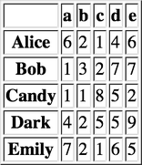
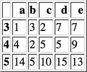

Pandas
Table of Contents
- 1. 核心数据结构
- 2. 函数应用
- 3. 索引
- 4. 分组与聚合
- 5. 处理丢失数据
- 6. 数据操作
- 7. 信息统计
- 8. 分组统计
- 9. 时间序列
- 10. 可视化
- 11. 导入导出
- 12. 示例工程
Table of Contents
| Author | Hao Ruan (haoru@cisco.com) |
| Date | 2018-02-19 22:46:27 |
1 核心数据结构
1.1 Series
Series 是一维带标签的数组，数组里可以放任意的数据（整数，浮点数，字符串，Python Object）。
其基本的创建函数是： pd.Series(data, index=index)
其中 index 是一个列表，用来作为数据的标签。data 可以是不同的数据类型：
- Python 字典
- ndarray 对象
- 一个标量值，如 5
1.1.1 创建
1.1.1.1 从 ndarray 创建
s = pd.Series(np.random.randn(5), index=['a', 'b', 'c', 'd', 'e']) log("s", s) log("s.index", s.index) s2 = pd.Series(np.random.randn(5)) log("s2", s2) log("s2.index", s2.index)
====================================== s ======================================= a 0.654609 b 0.524601 c 0.576032 d 0.946077 e -1.381760 dtype: float64 =================================== s.index ==================================== Index(['a', 'b', 'c', 'd', 'e'], dtype='object') ====================================== s2 ====================================== 0 0.248960 1 1.183231 2 1.749614 3 0.842280 4 -0.621915 dtype: float64 =================================== s2.index =================================== RangeIndex(start=0, stop=5, step=1)
1.1.1.2 从字典创建
d = {'a' : 0., 'b' : 1., 'd' : 3} s = pd.Series(d, index=list('abcd')) log("s", s)
====================================== s ======================================= a 0.0 b 1.0 c NaN d 3.0 dtype: float64
1.1.1.3 从标量创建
s = pd.Series(3, index=list('abcde')) log("s", s)
====================================== s ======================================= a 3 b 3 c 3 d 3 e 3 dtype: int64
1.1.2 特性
1.1.2.1 类 ndarray 对象
s = pd.Series(np.random.randn(5)) log("s[0]", s[0]) log("s[:3]", s[:3]) log("s[[1, 3, 4]]", s[[1, 3, 4]]) log("np.exp(s)", np.exp(s)) log("np.sin(s)", np.sin(s))
===================================== s[0] ===================================== 0.008477111495416207 ==================================== s[:3] ===================================== 0 0.008477 1 -0.499772 2 -0.471886 dtype: float64 ================================= s[[1, 3, 4]] ================================= 1 -0.499772 3 -1.785127 4 -0.427500 dtype: float64 ================================== np.exp(s) =================================== 0 1.008513 1 0.606669 2 0.623825 3 0.167776 4 0.652137 dtype: float64 ================================== np.sin(s) =================================== 0 0.008477 1 -0.479225 2 -0.454567 3 -0.977119 4 -0.414597 dtype: float64
1.1.2.2 类字典对象
s = pd.Series(np.random.randn(5), index=['a', 'b', 'c', 'd', 'e']) s['e'] = 5 log("s", s) log("'e' in s", 'e' in s) log("s.get('f', np.nan)", s.get('f', np.nan))
====================================== s =======================================
a 0.254533
b -0.462852
c 0.009711
d 0.041161
e 5.000000
dtype: float64
=================================== 'e' in s ===================================
True
============================== s.get('f', np.nan) ==============================
nan
1.1.2.3 标签对齐
相同索引值才进行操作
s1 = pd.Series(np.random.randn(3), index=['a', 'c', 'e']) s2 = pd.Series(np.random.randn(3), index=['a', 'd', 'e']) log("s1", s1) log("s2", s2) log("s1 + s2", s1 + s2)
====================================== s1 ====================================== a -0.597988 c -2.905320 e -1.006727 dtype: float64 ====================================== s2 ====================================== a -2.009629 d 2.187941 e -0.281375 dtype: float64 =================================== s1 + s2 ==================================== a -2.607617 c NaN d NaN e -1.288102 dtype: float64
1.2 DataFrame
DataFrame 是 二维带行标签和列标签的数组 。
可以把 DataFrame 想象成一个 Excel 表格或一个 SQL 数据库的表格，还可以想象成是一个 Series 对象字典。
它是 Pandas 里最常用的数据结构。
创建 DataFrame 的基本格式是：
pd.DataFrame(data, index=index, columns=columns)
其中 index 是行标签，columns 是列标签，data 可以是下面的数据：
- 由一维 numpy 数组，list，Series 构成的字典
- 二维 numpy 数组
- 一个 Series
- 另外的 DataFrame 对象
1.2.1 创建
1.2.1.1 从字典创建
key 为 DataFrame 的列；value 为对应列下的值
d = {'one' : pd.Series([1, 2, 3], index=['a', 'b', 'c']), 'two' : pd.Series([1, 2, 3, 4], index=['a', 'b', 'c', 'd'])} log("pd.DataFrame(d)", pd.DataFrame(d)) log("pd.DataFrame(d, index=['d', 'b', 'a'])", pd.DataFrame(d, index=['d', 'b', 'a'])) log("pd.DataFrame(d, index=['d', 'b', 'a'], columns=['two', 'three'])", pd.DataFrame(d, index=['d', 'b', 'a'], columns=['two', 'three']))
=============================== pd.DataFrame(d) ================================ one two a 1.0 1 b 2.0 2 c 3.0 3 d NaN 4 ==================== pd.DataFrame(d, index=['d', 'b', 'a']) ==================== one two d NaN 4 b 2.0 2 a 1.0 1 ======= pd.DataFrame(d, index=['d', 'b', 'a'], columns=['two', 'three']) ======= two three d 4 NaN b 2 NaN a 1 NaN
d = {'one' : [1, 2, 3, 4], 'two' : [21, 22, 23, 24]} log("pd.DataFrame(d)", pd.DataFrame(d)) log("pd.DataFrame(d, index=['a', 'b', 'c', 'd'])", pd.DataFrame(d, index=['a', 'b', 'c', 'd']))
=============================== pd.DataFrame(d) ================================ one two 0 1 21 1 2 22 2 3 23 3 4 24 ================= pd.DataFrame(d, index=['a', 'b', 'c', 'd']) ================== one two a 1 21 b 2 22 c 3 23 d 4 24
df = pd.DataFrame({ 'A': 1, 'B': pd.Timestamp('20160301'), 'C': range(4), 'D': np.arange(5, 9), 'E': 'text', 'F': ['AA', 'BB', 'CC', 'DD']}) log("df", df)
====================================== df ====================================== A B C D E F 0 1 2016-03-01 0 5 text AA 1 1 2016-03-01 1 6 text BB 2 1 2016-03-01 2 7 text CC 3 1 2016-03-01 3 8 text DD
1.2.1.2 从结构化数据列表创建
data = [(1, 2.2, 'Hello'), (2, 3., "World")] log("pd.DataFrame(data)", pd.DataFrame(data)) log("pd.DataFrame(data, index=['first', 'second'], columns=['A', 'B', 'C'])", pd.DataFrame(data, index=['first', 'second'], columns=['A', 'B', 'C']))
============================== pd.DataFrame(data) ==============================
0 1 2
0 1 2.2 Hello
1 2 3.0 World
==== pd.DataFrame(data, index=['first', 'second'], columns=['A', 'B', 'C']) ====
A B C
first 1 2.2 Hello
second 2 3.0 World
1.2.1.3 从字典列表创建
data = [{'a': 1, 'b': 2}, {'a': 5, 'b': 10, 'c': 20}] log("pd.DataFrame(data)", pd.DataFrame(data)) log("pd.DataFrame(data, index=['first', 'second'])", pd.DataFrame(data, index=['first', 'second'])) log("pd.DataFrame(data, columns=['a', 'b'])", pd.DataFrame(data, columns=['a', 'b']))
============================== pd.DataFrame(data) ==============================
a b c
0 1 2 NaN
1 5 10 20.0
================ pd.DataFrame(data, index=['first', 'second']) =================
a b c
first 1 2 NaN
second 5 10 20.0
==================== pd.DataFrame(data, columns=['a', 'b']) ====================
a b
0 1 2
1 5 10
1.2.1.4 从元组字典创建
实际应用中，会通过数据清洗的方式，把数据整理成方便 Pandas 导入且可读性好的格式。 然后再通过 reindex/groupby 等方式转换成复杂数据结构。
d = {('a', 'b'): {('A', 'B'): 1, ('A', 'C'): 2}, ('a', 'a'): {('A', 'C'): 3, ('A', 'B'): 4}, ('a', 'c'): {('A', 'B'): 5, ('A', 'C'): 6}, ('b', 'a'): {('A', 'C'): 7, ('A', 'B'): 8}, ('b', 'b'): {('A', 'D'): 9, ('A', 'B'): 10}} # 多级标签 log("pd.DataFrame(d)", pd.DataFrame(d))
=============================== pd.DataFrame(d) ================================
a b
a b c a b
A B 4.0 1.0 5.0 8.0 10.0
C 3.0 2.0 6.0 7.0 NaN
D NaN NaN NaN NaN 9.0
1.2.1.5 从 Series 创建
s = pd.Series(np.random.randn(5), index=['a', 'b', 'c', 'd', 'e']) log("pd.DataFrame(s)", pd.DataFrame(s)) log("pd.DataFrame(s, index=['a', 'c', 'd'])", pd.DataFrame(s, index=['a', 'c', 'd'])) log("pd.DataFrame(s, index=['a', 'c', 'd'], columns=['A'])", pd.DataFrame(s, index=['a', 'c', 'd'], columns=['A']))
=============================== pd.DataFrame(s) ================================
0
a 0.848499
b 0.006919
c -2.268269
d 0.920902
e 0.842584
==================== pd.DataFrame(s, index=['a', 'c', 'd']) ====================
0
a 0.848499
c -2.268269
d 0.920902
============ pd.DataFrame(s, index=['a', 'c', 'd'], columns=['A']) =============
A
a 0.848499
c -2.268269
d 0.920902
1.2.1.6 指定行列索引创建
dates = pd.date_range('20160301', periods=6) log("dates", dates) df = pd.DataFrame(np.random.randn(6,4), index=dates, columns=list('ABCD')) log("df", df)
==================================== dates =====================================
DatetimeIndex(['2016-03-01', '2016-03-02', '2016-03-03', '2016-03-04',
'2016-03-05', '2016-03-06'],
dtype='datetime64[ns]', freq='D')
====================================== df ======================================
A B C D
2016-03-01 -0.524607 -1.501606 -0.543896 -1.302627
2016-03-02 0.406320 -0.866113 -0.947605 -0.006368
2016-03-03 -0.547483 -0.584272 -0.344114 -1.004443
2016-03-04 -0.231592 -0.419596 0.128426 0.993333
2016-03-05 0.095829 1.484087 -2.253950 -0.075188
2016-03-06 -0.576873 0.242221 -1.065005 -0.481174
1.2.2 数据操作
df = pd.DataFrame(np.random.randn(6, 4), index=list('ABCDEF'), columns=['one', 'two', 'three', 'four']) log("df", df)
====================================== df ======================================
one two three four
A 0.624742 -2.624470 0.333018 -0.237805
B -0.498780 -0.526494 1.976712 -0.733802
C -0.757928 0.342199 -1.205347 -1.739901
D 1.192872 0.576566 1.194880 -0.086314
E 0.609221 -1.135562 -0.591132 0.209602
F 1.099345 1.297526 -1.070683 0.460228
1.2.2.1 列选择(Series)
log("df['one']", df['one']) log("df.one", df.one)
================================== df['one'] =================================== A 0.624742 B -0.498780 C -0.757928 D 1.192872 E 0.609221 F 1.099345 Name: one, dtype: float64 ==================================== df.one ==================================== A 0.624742 B -0.498780 C -0.757928 D 1.192872 E 0.609221 F 1.099345 Name: one, dtype: float64
1.2.2.2 列选择(DataFrame)
log("df.loc[:, ['one', 'two']]", df.loc[:, ['one', 'two']]) log("df.iloc[:, 0:1]", df.iloc[:, 0:1])
========================== df.loc[:, ['one', 'two']] ===========================
one two
A 0.624742 -2.624470
B -0.498780 -0.526494
C -0.757928 0.342199
D 1.192872 0.576566
E 0.609221 -1.135562
F 1.099345 1.297526
=============================== df.iloc[:, 0:1] ================================
one
A 0.624742
B -0.498780
C -0.757928
D 1.192872
E 0.609221
F 1.099345
1.2.2.3 列赋值
df['three'] = df['one'] + df['two'] log("df", df)
====================================== df ======================================
one two three four
A 0.624742 -2.624470 -1.999729 -0.237805
B -0.498780 -0.526494 -1.025275 -0.733802
C -0.757928 0.342199 -0.415729 -1.739901
D 1.192872 0.576566 1.769437 -0.086314
E 0.609221 -1.135562 -0.526342 0.209602
F 1.099345 1.297526 2.396871 0.460228
1.2.2.4 列删除
del df['three'] log("df", df)
====================================== df ======================================
one two four
A 0.624742 -2.624470 -0.237805
B -0.498780 -0.526494 -0.733802
C -0.757928 0.342199 -1.739901
D 1.192872 0.576566 -0.086314
E 0.609221 -1.135562 0.209602
F 1.099345 1.297526 0.460228
s = df.pop('four') log("s", s) log("df", df)
====================================== s =======================================
A -0.237805
B -0.733802
C -1.739901
D -0.086314
E 0.209602
F 0.460228
Name: four, dtype: float64
====================================== df ======================================
one two
A 0.624742 -2.624470
B -0.498780 -0.526494
C -0.757928 0.342199
D 1.192872 0.576566
E 0.609221 -1.135562
F 1.099345 1.297526
result = df.drop(['one', 'two'], axis=1) # df 不变 log("result", result)
==================================== result ==================================== Empty DataFrame Columns: [] Index: [A, B, C, D, E, F]
1.2.2.5 增加列
1.2.2.5.1 添加到最后
df['flag'] = df['one'] > 0 df['five'] = 5 df['one_trunc'] = df['one'][:2] log("df", df)
====================================== df ======================================
one two flag five one_trunc
A 0.624742 -2.624470 True 5 0.624742
B -0.498780 -0.526494 False 5 -0.498780
C -0.757928 0.342199 False 5 NaN
D 1.192872 0.576566 True 5 NaN
E 0.609221 -1.135562 True 5 NaN
F 1.099345 1.297526 True 5 NaN
1.2.2.5.2 指定位置添加
df.insert(1, 'bar', df.one + df.two) log("df", df)
====================================== df ======================================
one bar two flag five one_trunc
A 0.624742 -1.999729 -2.624470 True 5 0.624742
B -0.498780 -1.025275 -0.526494 False 5 -0.498780
C -0.757928 -0.415729 0.342199 False 5 NaN
D 1.192872 1.769437 0.576566 True 5 NaN
E 0.609221 -0.526342 -1.135562 True 5 NaN
F 1.099345 2.396871 1.297526 True 5 NaN
1.2.2.5.3 assign()
assign 方法并不会 inplace 地改变原来的 dataframe ， 该方法的 优势 在于可以对 dataframe 对象使用链式操作。
df1 = df.assign(Ratio=df.one/df.two) log("df1", df1) log("df", df)
===================================== df1 ======================================
one bar two flag five one_trunc Ratio
A 0.624742 -1.999729 -2.624470 True 5 0.624742 -0.238045
B -0.498780 -1.025275 -0.526494 False 5 -0.498780 0.947361
C -0.757928 -0.415729 0.342199 False 5 NaN -2.214874
D 1.192872 1.769437 0.576566 True 5 NaN 2.068925
E 0.609221 -0.526342 -1.135562 True 5 NaN -0.536493
F 1.099345 2.396871 1.297526 True 5 NaN 0.847262
====================================== df ======================================
one bar two flag five one_trunc
A 0.624742 -1.999729 -2.624470 True 5 0.624742
B -0.498780 -1.025275 -0.526494 False 5 -0.498780
C -0.757928 -0.415729 0.342199 False 5 NaN
D 1.192872 1.769437 0.576566 True 5 NaN
E 0.609221 -0.526342 -1.135562 True 5 NaN
F 1.099345 2.396871 1.297526 True 5 NaN
log("df.assign(Ratio=lambda x: x.one - x.two)", df.assign(Ratio=lambda x: x.one - x.two)) log("df.assign(ABRatio=df.one/df.two).assign(BarValue=lambda x: x.ABRatio*x.bar)", df.assign(ABRatio=df.one/df.two).assign(BarValue=lambda x: x.ABRatio*x.bar))
=================== df.assign(Ratio=lambda x: x.one - x.two) ===================
one bar two flag five one_trunc Ratio
A 0.624742 -1.999729 -2.624470 True 5 0.624742 3.249212
B -0.498780 -1.025275 -0.526494 False 5 -0.498780 0.027714
C -0.757928 -0.415729 0.342199 False 5 NaN -1.100127
D 1.192872 1.769437 0.576566 True 5 NaN 0.616306
E 0.609221 -0.526342 -1.135562 True 5 NaN 1.744783
F 1.099345 2.396871 1.297526 True 5 NaN -0.198181
= df.assign(ABRatio=df.one/df.two).assign(BarValue=lambda x: x.ABRatio*x.bar) ==
one bar two flag five one_trunc ABRatio BarValue
A 0.624742 -1.999729 -2.624470 True 5 0.624742 -0.238045 0.476025
B -0.498780 -1.025275 -0.526494 False 5 -0.498780 0.947361 -0.971306
C -0.757928 -0.415729 0.342199 False 5 NaN -2.214874 0.920787
D 1.192872 1.769437 0.576566 True 5 NaN 2.068925 3.660834
E 0.609221 -0.526342 -1.135562 True 5 NaN -0.536493 0.282378
F 1.099345 2.396871 1.297526 True 5 NaN 0.847262 2.030778
1.2.2.6 行选择(Series)
log("df.loc['A']", df.loc['A']) # 行标签方式 log("df.iloc[0]", df.iloc[0]) # 行位置方式
================================= df.loc['A'] ================================== one 0.624742 bar -1.99973 two -2.62447 flag True five 5 one_trunc 0.624742 Name: A, dtype: object ================================== df.iloc[0] ================================== one 0.624742 bar -1.99973 two -2.62447 flag True five 5 one_trunc 0.624742 Name: A, dtype: object
1.2.2.7 行选择(DataFrame)
log("df[2:4]", df[2:4]) log("df['A':'C']", df['A':'C']) log("df.iloc[2:4]", df.iloc[2:4]) # 效率高 log("df[df.one > 0.5]", df[df.one > 0.5]) # 布尔方式 log("df[df > 0]", df[df > 0]) # 布尔方式 log("df[[False, True, True, False, True, False]]", df[[False, True, True, False, True, False]]) # 布尔方式
=================================== df[2:4] ====================================
one bar two flag five one_trunc
C -0.757928 -0.415729 0.342199 False 5 NaN
D 1.192872 1.769437 0.576566 True 5 NaN
================================= df['A':'C'] ==================================
one bar two flag five one_trunc
A 0.624742 -1.999729 -2.624470 True 5 0.624742
B -0.498780 -1.025275 -0.526494 False 5 -0.498780
C -0.757928 -0.415729 0.342199 False 5 NaN
================================= df.iloc[2:4] =================================
one bar two flag five one_trunc
C -0.757928 -0.415729 0.342199 False 5 NaN
D 1.192872 1.769437 0.576566 True 5 NaN
=============================== df[df.one > 0.5] ===============================
one bar two flag five one_trunc
A 0.624742 -1.999729 -2.624470 True 5 0.624742
D 1.192872 1.769437 0.576566 True 5 NaN
E 0.609221 -0.526342 -1.135562 True 5 NaN
F 1.099345 2.396871 1.297526 True 5 NaN
================================== df[df > 0] ==================================
one bar two flag five one_trunc
A 0.624742 NaN NaN 1.0 5 0.624742
B NaN NaN NaN NaN 5 NaN
C NaN NaN 0.342199 NaN 5 NaN
D 1.192872 1.769437 0.576566 1.0 5 NaN
E 0.609221 NaN NaN 1.0 5 NaN
F 1.099345 2.396871 1.297526 1.0 5 NaN
================= df[[False, True, True, False, True, False]] ==================
one bar two flag five one_trunc
B -0.498780 -1.025275 -0.526494 False 5 -0.49878
C -0.757928 -0.415729 0.342199 False 5 NaN
E 0.609221 -0.526342 -1.135562 True 5 NaN
1.2.2.8 行删除
result = df.drop('A') # result 是一份新的数据拷贝 log("result", result)
==================================== result ====================================
one bar two flag five one_trunc
B -0.498780 -1.025275 -0.526494 False 5 -0.49878
C -0.757928 -0.415729 0.342199 False 5 NaN
D 1.192872 1.769437 0.576566 True 5 NaN
E 0.609221 -0.526342 -1.135562 True 5 NaN
F 1.099345 2.396871 1.297526 True 5 NaN
1.2.2.9 行与列选择
log("df.loc['A':'B', ['one', 'two']]", df.loc['A':'B', ['one', 'two']]) log("df.iloc[0:2, 0:3]", df.iloc[0:2, 0:3])
======================= df.loc['A':'B', ['one', 'two']] ========================
one two
A 0.624742 -2.624470
B -0.498780 -0.526494
============================== df.iloc[0:2, 0:3] ===============================
one bar two
A 0.624742 -1.999729 -2.624470
B -0.498780 -1.025275 -0.526494
1.2.2.10 选择指定坐标
log("df.loc['A', 'one']", df.loc['A', 'one']) log("df.at['A', 'one']", df.at['A', 'one']) log("df.iloc[1, 1]", df.iloc[1, 1]) log("df.iat[1, 1]", df.iat[1, 1])
============================== df.loc['A', 'one'] ============================== 0.624741731741543 ============================== df.at['A', 'one'] =============================== 0.624741731741543 ================================ df.iloc[1, 1] ================================= -1.0252747516330538 ================================= df.iat[1, 1] ================================= -1.0252747516330538
1.2.2.11 数据对齐
DataFrame 在进行数据计算时， 会自动按行和列进行数据对齐 。 最终的计算结果会合并两个 DataFrame 。
df1 = pd.DataFrame(np.random.randn(10, 4), index=list('abcdefghij'), columns=['A', 'B', 'C', 'D']) df2 = pd.DataFrame(np.random.randn(7, 3), index=list('cdefghi'), columns=['A', 'B', 'C']) log("df1", df1) log("df2", df2) log("df1 + df2", df1 + df2) log("df1 - df1.iloc[0]", df1 - df1.iloc[0])
===================================== df1 ======================================
A B C D
a 0.377634 -0.556974 2.041316 -0.683097
b 1.277876 0.285827 -0.923395 2.197208
c -2.174404 0.863986 0.127276 0.936876
d -1.484082 0.130357 2.113753 -2.116671
e -0.920127 -1.494546 -1.962536 0.631815
f 0.804857 1.188925 1.712200 -0.180187
g -1.086326 0.469700 0.072257 -0.149728
h -0.011807 -1.470717 1.046002 0.301448
i -1.464302 0.489558 0.247769 1.311970
j 0.366970 0.496196 0.652520 0.377583
===================================== df2 ======================================
A B C
c -0.796342 -0.668158 -0.804846
d -0.527799 -0.250736 1.418304
e -0.306861 0.596801 -0.079840
f -0.076861 0.238254 0.363585
g 1.981501 -0.026693 0.249304
h 1.022270 0.769587 -0.144064
i 1.090153 1.320427 0.573888
================================== df1 + df2 ===================================
A B C D
a NaN NaN NaN NaN
b NaN NaN NaN NaN
c -2.970746 0.195828 -0.677570 NaN
d -2.011881 -0.120379 3.532056 NaN
e -1.226988 -0.897744 -2.042376 NaN
f 0.727996 1.427179 2.075785 NaN
g 0.895176 0.443006 0.321561 NaN
h 1.010463 -0.701131 0.901938 NaN
i -0.374149 1.809985 0.821658 NaN
j NaN NaN NaN NaN
============================== df1 - df1.iloc[0] ===============================
A B C D
a 0.000000 0.000000 0.000000 0.000000
b 0.900242 0.842802 -2.964712 2.880305
c -2.552037 1.420960 -1.914040 1.619973
d -1.861716 0.687331 0.072436 -1.433574
e -1.297761 -0.937571 -4.003852 1.314912
f 0.427224 1.745899 -0.329116 0.502910
g -1.463960 1.026674 -1.969059 0.533369
h -0.389441 -0.913743 -0.995314 0.984545
i -1.841936 1.046532 -1.793547 1.995067
j -0.010664 1.053171 -1.388796 1.060680
df3 = df2.loc[:, ['B', 'C']].copy() log("df3 (before)", df3) df3[df3 > 0] = -df3 log("df3 (after)", df3)
================================= df3 (before) =================================
B C
c -0.668158 -0.804846
d -0.250736 1.418304
e 0.596801 -0.079840
f 0.238254 0.363585
g -0.026693 0.249304
h 0.769587 -0.144064
i 1.320427 0.573888
================================= df3 (after) ==================================
B C
c -0.668158 -0.804846
d -0.250736 -1.418304
e -0.596801 -0.079840
f -0.238254 -0.363585
g -0.026693 -0.249304
h -0.769587 -0.144064
i -1.320427 -0.573888
1.2.2.12 使用 numpy 函数
因为从本质上讲，DataFrame 内部用的数据结构就是 numpy 的 ndarray 。
df = pd.DataFrame(np.random.randn(10, 4), columns=['one', 'two', 'three', 'four']) log("np.exp(df)", np.exp(df)) log("np.sin(df)", np.sin(df))
================================== np.exp(df) ==================================
one two three four
0 11.170040 0.454007 3.990201 0.102700
1 1.356354 0.312709 0.468818 0.788990
2 0.639459 3.563325 1.566325 0.066693
3 1.979718 1.170441 0.768294 0.744595
4 1.947619 0.696596 0.345896 0.657910
5 2.238559 0.088354 1.407147 0.625394
6 1.252626 2.472952 0.770047 1.642042
7 0.517493 0.147705 1.591390 0.218760
8 0.341389 7.761868 1.078785 0.452102
9 2.138146 0.215454 1.569568 0.478977
================================== np.sin(df) ==================================
one two three four
0 0.665645 -0.710101 0.982575 -0.761516
1 0.300103 -0.917792 -0.687136 -0.234790
2 -0.432382 0.955306 0.433823 -0.420451
3 0.631088 0.156732 -0.260541 -0.290658
4 0.618323 -0.353724 -0.873145 -0.406561
5 0.721407 -0.655756 0.334962 -0.452328
6 0.223343 0.786680 -0.258341 0.475859
7 -0.612137 -0.942173 0.448072 -0.998699
8 -0.879463 0.887720 0.075763 -0.713056
9 0.688877 -0.999360 0.435686 -0.671404
1.2.2.12.1 DataFrame 转换为 ndarray 对象
ary = np.asarray(df) log("ary", ary) log("ary == df.values", ary == df.values) log("ary == df", ary == df)
===================================== ary ======================================
[[ 2.41323517 -0.7896421 1.3838415 -2.27594433]
[ 0.30480031 -1.16248376 -0.75753982 -0.23700218]
[-0.44713235 1.27069413 0.44873207 -2.70764993]
[ 0.68295465 0.15738074 -0.26358238 -0.29491441]
[ 0.66660757 -0.3615493 -1.06161738 -0.41868689]
[ 0.80583247 -2.42640929 0.34156453 -0.46937419]
[ 0.22524233 0.90541243 -0.26130413 0.49594075]
[-0.65875969 -1.91253658 0.4646077 -1.51977904]
[-1.07473333 2.04922298 0.07583531 -0.793847 ]
[ 0.75993923 -1.53500857 0.45080032 -0.73610226]]
=============================== ary == df.values ===============================
[[ True True True True]
[ True True True True]
[ True True True True]
[ True True True True]
[ True True True True]
[ True True True True]
[ True True True True]
[ True True True True]
[ True True True True]
[ True True True True]]
================================== ary == df ===================================
one two three four
0 True True True True
1 True True True True
2 True True True True
3 True True True True
4 True True True True
5 True True True True
6 True True True True
7 True True True True
8 True True True True
9 True True True True
1.3 Panel
Panel 是三维带标签的数组。
Panel 由三个标签组成：
- items
- 坐标轴 0 ，索引对应的元素是一个 DataFrame
- major_axis
- 坐标轴 1 , DataFrame 里的行标签
- minor_axis
- 坐标轴 2 , DataFrame 里的列标签
2 函数应用
2.1 将数据按行或列进行计算(apply)
df = pd.DataFrame(np.arange(12).reshape(4, 3), index=['one', 'two', 'three', 'four'], columns=list('ABC')) log("df", df)
====================================== df ======================================
A B C
one 0 1 2
two 3 4 5
three 6 7 8
four 9 10 11
2.1.0.1 按列进行运算
每一列作为一个 Series 作为参数传递给 lambda 函数
result = df.apply(lambda x: x.max() - x.min()) log("result", result)
==================================== result ==================================== A 9 B 9 C 9 dtype: int64
2.1.0.2 按行进行运算
每一行作为一个 Series 作为参数传递给 lambda 函数
result = df.apply(lambda x: x.max() - x.min(), axis=1) log("result", result)
==================================== result ==================================== one 2 two 2 three 2 four 2 dtype: int64
2.1.0.3 返回多个值组成的 Series
def min_max(x): return pd.Series([x.min(), x.max()], index=['min', 'max']) result = df.apply(min_max, axis=1) log("result", result)
==================================== result ====================================
min max
one 0 2
two 3 5
three 6 8
four 9 11
2.2 逐元素运算(applymap)
df = pd.DataFrame(np.random.randn(4, 3), index=['one', 'two', 'three', 'four'], columns=list('ABC')) log("df", df)
====================================== df ======================================
A B C
one 0.463203 -1.128320 1.643553
two -0.791495 -1.176356 0.311972
three 0.513295 -0.758507 -0.823157
four -0.856576 0.121268 0.722507
# x 表示 dataframe 中的每个元素 result = df.applymap(lambda x: '{0:.03f}'.format(x)) log("result", result)
==================================== result ====================================
A B C
one 0.463 -1.128 1.644
two -0.791 -1.176 0.312
three 0.513 -0.759 -0.823
four -0.857 0.121 0.723
2.3 排序(sort_values)
df = pd.DataFrame(np.random.randint(1, 10, (4, 3)), index=list('ABCD'), columns=['one', 'two', 'three']) log("df", df)
====================================== df ====================================== one two three A 3 1 6 B 2 5 1 C 5 4 4 D 6 8 8
2.3.1 按列排序
result = df.sort_values(by='two', ascending=False) log("result", result)
==================================== result ==================================== one two three D 6 8 8 B 2 5 1 C 5 4 4 A 3 1 6
2.3.2 按行排序
result = df.sort_values(by='C', axis=1, ascending=False) log("result", result)
==================================== result ==================================== one two three A 3 1 6 B 2 5 1 C 5 4 4 D 6 8 8
2.4 索引排序(sort_index)
df = pd.DataFrame(np.random.randint(1, 10, (4, 3)), index=list('ABCD'), columns=['one', 'two', 'three']) log("df", df)
====================================== df ====================================== one two three A 7 8 6 B 2 3 2 C 6 4 8 D 5 2 6
col_sort = df.sort_index(axis=1, ascending=False) row_sort = df.sort_index(ascending=False) log("col_sort", col_sort) log("row_sort", row_sort)
=================================== col_sort =================================== two three one A 8 6 7 B 3 2 2 C 4 8 6 D 2 6 5 =================================== row_sort =================================== one two three D 5 2 6 C 6 4 8 B 2 3 2 A 7 8 6
2.5 排名(rank)
s = pd.Series([3, 6, 2, 6, 4]) df = pd.DataFrame(np.random.randint(1, 10, (4, 3)), index=list('ABCD'), columns=['one', 'two', 'three']) log("s", s) log("df", df)
====================================== s ======================================= 0 3 1 6 2 2 3 6 4 4 dtype: int64 ====================================== df ====================================== one two three A 1 1 8 B 8 4 2 C 5 7 3 D 7 1 2
s_result = s.rank(method='first', ascending=False) log("s_result", s_result)
=================================== s_result =================================== 0 4.0 1 1.0 2 5.0 3 2.0 4 3.0 dtype: float64
df_result = df.rank(method='first') log("df_result", df_result)
================================== df_result =================================== one two three A 1.0 1.0 4.0 B 4.0 3.0 1.0 C 2.0 4.0 3.0 D 3.0 2.0 2.0
2.6 Series 元素统计
s = pd.Series(list('abbcdabacad')) log("s", s)
====================================== s ======================================= 0 a 1 b 2 b 3 c 4 d 5 a 6 b 7 a 8 c 9 a 10 d dtype: object
2.6.1 个数统计(value_counts)
log("s.value_counts()", s.value_counts())
=============================== s.value_counts() =============================== a 4 b 3 c 2 d 2 dtype: int64
2.6.2 唯一性统计(uniq)
log("s.unique()", s.unique())
================================== s.unique() ================================== ['a' 'b' 'c' 'd']
2.6.3 成员资格统计(isin)
log("s.isin(['a', 'b', 'c'])", s.isin(['a', 'b', 'c']))
=========================== s.isin(['a', 'b', 'c']) ============================ 0 True 1 True 2 True 3 True 4 False 5 True 6 True 7 True 8 True 9 True 10 False dtype: bool
3 索引
3.1 重新索引
即把索引值进行重新赋值， 以增加一些行的数据 。
3.1.1 Series
s = pd.Series([1, 3, 5, 6, 8], index=list('acefh')) log("s", s)
====================================== s ======================================= a 1 c 3 e 5 f 6 h 8 dtype: int64
log("s.reindex(list('abcdefgh'))", s.reindex(list('abcdefgh')))
========================= s.reindex(list('abcdefgh')) ==========================
a 1.0
b NaN
c 3.0
d NaN
e 5.0
f 6.0
g NaN
h 8.0
dtype: float64
3.1.1.0.1 填充默认值
log("s.reindex(list('abcdefgh'), fill_value=0)", s.reindex(list('abcdefgh'), fill_value=0))
================== s.reindex(list('abcdefgh'), fill_value=0) ===================
a 1
b 0
c 3
d 0
e 5
f 6
g 0
h 8
dtype: int64
3.1.1.0.2 往前填充
log("s.reindex(list('abcdefgh'), method='ffill')", s.reindex(list('abcdefgh'), method='ffill'))
================= s.reindex(list('abcdefgh'), method='ffill') ==================
a 1
b 1
c 3
d 3
e 5
f 6
g 6
h 8
dtype: int64
3.1.1.0.3 往后填充
log("s.reindex(list('abcdefgh'), method='bfill')", s.reindex(list('abcdefgh'), method='bfill'))
================= s.reindex(list('abcdefgh'), method='bfill') ==================
a 1
b 3
c 3
d 5
e 5
f 6
g 8
h 8
dtype: int64
3.1.2 DataFrame
df = pd.DataFrame(np.random.randn(4, 6), index=list('ADFH'), columns=['one', 'two', 'three', 'four', 'five', 'six']) log("df", df)
====================================== df ======================================
one two three four five six
A 0.106310 -0.465103 0.458735 0.388230 0.333518 -0.199344
D -0.636173 -0.262561 -0.435940 1.179164 0.382367 -0.490363
F -1.290498 1.127763 -0.808983 0.826825 0.765913 -0.652603
H -1.920708 1.188863 0.261151 0.076768 0.604244 1.109027
3.1.2.0.1 对行重新索引
log("df.reindex(index=list('ABCDEFGH'))", df.reindex(index=list('ABCDEFGH')))
====================== df.reindex(index=list('ABCDEFGH')) ======================
one two three four five six
A 0.106310 -0.465103 0.458735 0.388230 0.333518 -0.199344
B NaN NaN NaN NaN NaN NaN
C NaN NaN NaN NaN NaN NaN
D -0.636173 -0.262561 -0.435940 1.179164 0.382367 -0.490363
E NaN NaN NaN NaN NaN NaN
F -1.290498 1.127763 -0.808983 0.826825 0.765913 -0.652603
G NaN NaN NaN NaN NaN NaN
H -1.920708 1.188863 0.261151 0.076768 0.604244 1.109027
fill method 只对行重新索引有效，不适用列
log("df.reindex(index=list('ABCDEFGH'), method='ffill')", df.reindex(index=list('ABCDEFGH'), method='ffill'))
============== df.reindex(index=list('ABCDEFGH'), method='ffill') ==============
one two three four five six
A 0.106310 -0.465103 0.458735 0.388230 0.333518 -0.199344
B 0.106310 -0.465103 0.458735 0.388230 0.333518 -0.199344
C 0.106310 -0.465103 0.458735 0.388230 0.333518 -0.199344
D -0.636173 -0.262561 -0.435940 1.179164 0.382367 -0.490363
E -0.636173 -0.262561 -0.435940 1.179164 0.382367 -0.490363
F -1.290498 1.127763 -0.808983 0.826825 0.765913 -0.652603
G -1.290498 1.127763 -0.808983 0.826825 0.765913 -0.652603
H -1.920708 1.188863 0.261151 0.076768 0.604244 1.109027
3.1.2.0.2 对列重新索引
log("df.reindex(columns=['one', 'three', 'five', 'seven'], fill_value=0)", df.reindex(columns=['one', 'three', 'five', 'seven'], fill_value=0))
===== df.reindex(columns=['one', 'three', 'five', 'seven'], fill_value=0) ======
one three five seven
A 0.106310 0.458735 0.333518 0
D -0.636173 -0.435940 0.382367 0
F -1.290498 -0.808983 0.765913 0
H -1.920708 0.261151 0.604244 0
3.2 索引命名
s = pd.Series(np.random.rand(5), index=list('abcde')) df = pd.DataFrame(np.random.randn(4, 3), columns=['one', 'two', 'three']) log("s", s) log("df", df)
====================================== s =======================================
a 0.565623
b 0.528500
c 0.768241
d 0.860586
e 0.591866
dtype: float64
====================================== df ======================================
one two three
0 0.691743 0.033842 1.209748
1 0.323450 1.061970 -1.306333
2 0.123988 0.483557 0.638213
3 0.578241 0.326928 -0.254767
log("s.index", s.index) s.index.name = 'alpha' log("s", s)
=================================== s.index ==================================== Index(['a', 'b', 'c', 'd', 'e'], dtype='object') ====================================== s ======================================= alpha a 0.565623 b 0.528500 c 0.768241 d 0.860586 e 0.591866 dtype: float64
log("df.index", df.index) log("df.columns", df.columns) df.index.name = 'row' df.columns.name = 'col' log("df", df)
=================================== df.index =================================== RangeIndex(start=0, stop=4, step=1) ================================== df.columns ================================== Index(['one', 'two', 'three'], dtype='object') ====================================== df ====================================== col one two three row 0 0.691743 0.033842 1.209748 1 0.323450 1.061970 -1.306333 2 0.123988 0.483557 0.638213 3 0.578241 0.326928 -0.254767
3.3 重复索引
索引值有重复项的索引
s = pd.Series(np.arange(6), index=list('abcbda')) log("s", s)
====================================== s ======================================= a 0 b 1 c 2 b 3 d 4 a 5 dtype: int64
log("s['a']", s['a']) log("s.index.is_unique", s.index.is_unique)
==================================== s['a'] ==================================== a 0 a 5 dtype: int64 ============================== s.index.is_unique =============================== False
3.3.1 对重复索引的处理（清洗）
sum_result = s.groupby(s.index).sum() # 对重复索引内容进行求和 log("sum_result", sum_result) first_result = s.groupby(s.index).first() # 对重复索引内容只取第一项 log("first_result", first_result) avg_result = s.groupby(s.index).mean() # 对重复索引内容取平均值 log("avg_result", avg_result)
================================== sum_result ================================== a 5 b 4 c 2 d 4 dtype: int64 ================================= first_result ================================= a 0 b 1 c 2 d 4 dtype: int64 ================================== avg_result ================================== a 2.5 b 2.0 c 2.0 d 4.0 dtype: float64
3.4 多级索引
用二维的数据表达更高维度的数据 ，使数据组织方式更清晰，它使用 pd.MultiIndex 类来表示。
3.4.1 层次化索引的作用
比如在分析股票数据：
- 一级行索引可以是日期
- 二级行索引可以是股票代码
- 列索引可以是股票的交易量，开盘价，收盘价等等
这样就可以把多个股票放在同一个时间维度下进行考察和分析。
3.4.2 Series 多级索引
3.4.2.1 创建
a = [['a', 'a', 'a', 'b', 'b', 'c', 'c'], [1, 2, 3, 1, 2, 2, 3]] tuples = list(zip(*a)) log("tuples", tuples) index = pd.MultiIndex.from_tuples(tuples, names=['first', 'second']) log("index", index) s = pd.Series(np.random.randn(7), index=index) log("s", s) log("s.index", s.index) log("s.index.levels[1]", s.index.levels[1])
==================================== tuples ====================================
[('a', 1), ('a', 2), ('a', 3), ('b', 1), ('b', 2), ('c', 2), ('c', 3)]
==================================== index =====================================
MultiIndex(levels=[['a', 'b', 'c'], [1, 2, 3]],
labels=[[0, 0, 0, 1, 1, 2, 2], [0, 1, 2, 0, 1, 1, 2]],
names=['first', 'second'])
====================================== s =======================================
first second
a 1 -0.575494
2 0.089339
3 -0.266689
b 1 -0.567371
2 0.275326
c 2 -1.288683
3 0.221641
dtype: float64
=================================== s.index ====================================
MultiIndex(levels=[['a', 'b', 'c'], [1, 2, 3]],
labels=[[0, 0, 0, 1, 1, 2, 2], [0, 1, 2, 0, 1, 1, 2]],
names=['first', 'second'])
============================== s.index.levels[1] ===============================
Int64Index([1, 2, 3], dtype='int64', name='second')
3.4.2.2 选取
log("s['b']", s['b']) log("s['b':'c']", s['b':'c']) log("s[['b', 'a']]", s[['b', 'a']]) log("s['b', 1]", s['b', 1]) log("s[:, 2]", s[:, 2])
==================================== s['b'] ====================================
second
1 -0.567371
2 0.275326
dtype: float64
================================== s['b':'c'] ==================================
first second
b 1 -0.567371
2 0.275326
c 2 -1.288683
3 0.221641
dtype: float64
================================ s[['b', 'a']] =================================
first second
a 1 -0.575494
2 0.089339
3 -0.266689
b 1 -0.567371
2 0.275326
dtype: float64
================================== s['b', 1] ===================================
-0.5673709449917991
=================================== s[:, 2] ====================================
first
a 0.089339
b 0.275326
c -1.288683
dtype: float64
3.4.3 DataFrame 多级索引
3.4.3.1 创建
df = pd.DataFrame(np.random.randint(1, 10, (4, 3)), # 1-10 之间的随机数，4 行 3 列 index=[['a', 'a', 'b', 'b'], [1, 2, 1, 2]], columns=[['one', 'one', 'two'], ['blue', 'red', 'blue']]) df.index.names = ['row-1', 'row-2'] df.columns.names = ['col-1', 'col-2'] show_dataframe(df)

3.4.3.2 选取
show_dataframe(df.loc['a'])

log("df.loc['a', 1]", df.loc['a', 1])
================================ df.loc['a', 1] ================================
col-1 col-2
one blue 8
red 1
two blue 6
Name: (a, 1), dtype: int64
3.4.3.3 多级索引交换
df2 = df.swaplevel('row-1', 'row-2') show_dataframe(df2)

3.4.3.4 多级索引排序
show_dataframe(df2.sortlevel(0)) # 0 表示根据一级索引进行排序

show_dataframe(df2.sortlevel(1)) # 根据二级索引进行排序

3.4.3.5 多级索引统计
show_dataframe(df.sum(level=0))
show_dataframe(df.sum(level=1))

3.4.3.6 列与索引的转换
创建多级索引比较复杂，一般情况下会从文件中读取一个 DataFrame ， 然后将其中某个列转换为多级索引，最终得到一个基于多级索引的 DataFrame 。
df = pd.DataFrame({ 'a': range(7), 'b': range(7, 0, -1), 'c': ['one', 'one', 'one', 'two', 'two', 'two', 'two'], 'd': [0, 1, 2, 0, 1, 2, 3] }) show_dataframe(df)

3.4.3.6.1 列转换为索引
show_dataframe(df.set_index('c'))
df2 = df.set_index(['c', 'd']) show_dataframe(df2)

3.4.3.6.2 索引转换为列
将所有索引转换为列
show_dataframe(df2.reset_index().sort_index('columns'))

4 分组与聚合
df = pd.DataFrame({'key1': ['a', 'a', 'b', 'b', 'a'], 'key2': ['one', 'two', 'one', 'two', 'one'], 'data1': np.random.randint(1, 10, 5), 'data2': np.random.randint(1, 10, 5)}) show_dataframe(df)

4.1 原理
三步曲：
- 拆分：根据什么进行分组
- 应用：每个分组进行什么样的计算（每个组应用一个 计算规则 ，输出一个结果）
- 聚合：把每个分组的计算结果合并起来，构成最终输出
4.2 分组
4.2.1 对 Series 进行分组
通过索引对齐关联起来
grouped = df['data1'].groupby(df['key1']) log("grouped", grouped) # groupby 对象 log("grouped.mean()", grouped.mean()) key = [1, 2, 1, 2, 1] log("df['data1'].groupby(key)", df['data1'].groupby(key))
=================================== grouped ==================================== <pandas.core.groupby.SeriesGroupBy object at 0x10939acf8> ================================ grouped.mean() ================================ key1 a 3.666667 b 2.500000 Name: data1, dtype: float64 =========================== df['data1'].groupby(key) =========================== <pandas.core.groupby.SeriesGroupBy object at 0x109254b00>
log("df['data1'].groupby([df['key1'], df['key2']]).mean()", df['data1'].groupby([df['key1'], df['key2']]).mean()) log("df['data1'].groupby([df['key1'], df['key2']]).size()", df['data1'].groupby([df['key1'], df['key2']]).size())
============= df['data1'].groupby([df['key1'], df['key2']]).mean() =============
key1 key2
a one 4
two 3
b one 3
two 2
Name: data1, dtype: int64
============= df['data1'].groupby([df['key1'], df['key2']]).size() =============
key1 key2
a one 2
two 1
b one 1
two 1
Name: data1, dtype: int64
4.2.2 对 DataFrame 进行分组（默认按行分组）
show_dataframe(df.groupby('key1').mean())

df1 = df.groupby(['key1', 'key2']).mean() show_dataframe(df1)
4.2.3 对分组对象进行迭代
for name, group in df.groupby('key1'): print(name) print(group) print('='*80) for name, group in df.groupby(['key1', 'key2']): print(name) print(group)
a
data1 data2 key1 key2
0 5 7 a one
1 3 4 a two
4 3 9 a one
b
data1 data2 key1 key2
2 3 1 b one
3 2 1 b two
================================================================================
('a', 'one')
data1 data2 key1 key2
0 5 7 a one
4 3 9 a one
('a', 'two')
data1 data2 key1 key2
1 3 4 a two
('b', 'one')
data1 data2 key1 key2
2 3 1 b one
('b', 'two')
data1 data2 key1 key2
3 2 1 b two
4.2.4 通过字典进行分组
df = pd.DataFrame(np.random.randint(1, 10, (5, 5)), columns=['a', 'b', 'c', 'd', 'e'], index=['Alice', 'Bob', 'Candy', 'Dark', 'Emily']) df.iloc[1, 1:3] = np.NaN show_dataframe(df)

mapping = {'a': 'red', 'b': 'red', 'c': 'blue', 'd': 'orange', 'e': 'blue'} grouped = df.groupby(mapping, axis=1) # 按列分组 show_dataframe(grouped.sum())
show_dataframe(grouped.count())

log("grouped.size()", grouped.size())
================================ grouped.size() ================================ blue 2 orange 1 red 2 dtype: int64
4.2.5 通过函数分组
当函数作为分组依据时，数据表里的每个索引（可以是行索引，也可以是列索引）都会调用一次函数， 函数的返回值作为分组的索引 ，即相同的返回值分在同一组。
df = pd.DataFrame(np.random.randint(1, 10, (5, 5)), columns=['a', 'b', 'c', 'd', 'e'], index=['Alice', 'Bob', 'Candy', 'Dark', 'Emily']) show_dataframe(df)

Figure 18: 示例数据
def _dummy_group(idx): print("idx:", idx) return idx print("axis=0") df.groupby(_dummy_group) print("axis=1") df.groupby(_dummy_group, axis=1)
axis=0 idx: Alice idx: Bob idx: Candy idx: Dark idx: Emily axis=1 idx: a idx: b idx: c idx: d idx: e
grouped = df.groupby(len) show_dataframe(grouped.sum())

4.2.6 多级索引数据根据索引级别来分组
columns = pd.MultiIndex.from_arrays([['China', 'USA', 'China', 'USA', 'China'], ['A', 'A', 'B', 'C', 'B']], names=['country', 'index']) df = pd.DataFrame(np.random.randint(1, 10, (5, 5)), columns=columns) show_dataframe(df)

Figure 20: 示例数据
show_dataframe(df.groupby(level='country', axis=1).count())
show_dataframe(df.groupby(level='country', axis=1).sum())
show_dataframe(df.groupby(level='index', axis=1).count())

4.3 数据聚合
df = pd.DataFrame({'key1': ['a', 'a', 'b', 'b', 'a'], 'key2': ['one', 'two', 'one', 'two', 'one'], 'data1': np.random.randint(1, 10, 5), 'data2': np.random.randint(1, 10, 5), 'data3': np.random.randint(1, 10, 5)}) show_dataframe(df)
Figure 24: 示例数据
4.3.1 内置聚合函数
4.3.1.1 sum
show_dataframe(df.groupby('key1').sum())

Figure 25: sum
4.3.1.2 mean
show_dataframe(df.groupby('key1').mean())
Figure 26: mean
4.3.1.3 size
log("df.groupby('key1').size()", df.groupby('key1').size())
========================== df.groupby('key1').size() ===========================
key1
a 3
b 2
dtype: int64
4.3.1.4 count
show_dataframe(df.groupby('key1').count())

Figure 27: count
4.3.1.5 min/max
show_dataframe(df.groupby('key1').min())

Figure 28: min
4.3.1.6 describe
show_dataframe(df.groupby('key1').describe())

Figure 29: describe
4.3.2 自定义聚合函数
自定义聚合函数时，需使用 agg() 或 aggregate() 函数。
def peak_range(s): print(s) print(type(s)) print('=====') return s.max() - s.min() grouped = df.groupby('key1') result = grouped.agg(peak_range)
0 7 1 5 4 9 Name: data1, dtype: int64 <class 'pandas.core.series.Series'> ===== 2 4 3 8 Name: data1, dtype: int64 <class 'pandas.core.series.Series'> ===== 0 4 1 3 4 3 Name: data2, dtype: int64 <class 'pandas.core.series.Series'> ===== 2 5 3 6 Name: data2, dtype: int64 <class 'pandas.core.series.Series'> ===== 0 6 1 8 4 7 Name: data3, dtype: int64 <class 'pandas.core.series.Series'> ===== 2 2 3 7 Name: data3, dtype: int64 <class 'pandas.core.series.Series'> ===== 0 one 1 two 4 one Name: key2, dtype: object <class 'pandas.core.series.Series'> ===== 0 one 1 two 4 one Name: key2, dtype: object <class 'pandas.core.series.Series'> ===== 0 one 1 two 4 one Name: a, dtype: object <class 'pandas.core.series.Series'> ===== 0 one 1 two 4 one Name: a, dtype: object <class 'pandas.core.series.Series'> =====
show_dataframe(result)

4.3.3 应用多个聚合函数
show_dataframe(grouped.agg(['std', 'mean', peak_range]))

Figure 31: 多个聚合函数
4.3.4 给聚合后的列起别名
show_dataframe(grouped.agg(['std', 'mean', ('high-low', peak_range)]))

Figure 32: 别名
4.3.5 自定义需要显示的列
show_dataframe(grouped.sum())

Figure 33: 所有列
show_dataframe(grouped['data1', 'data3'].sum())

Figure 34: 自定义后的列
4.3.6 给不同的列应用不同的聚合函数
使用 dict 作为参数来实现，此方法也能实现自定义需要显示的列。
d = {'data1': ['mean', peak_range, 'max', 'min'], 'data2': 'sum'} show_dataframe(grouped.agg(d))

Figure 35: 不同的聚合函数
4.3.7 索引重置
# 等效于 df.groupby('key1', as_index=False).agg(d) show_dataframe(grouped.agg(d).reset_index())
Figure 36: reset_index 效果
5 处理丢失数据
dates = pd.date_range('20160301', periods=6) df = pd.DataFrame(data=np.random.randn(6, 4), index=dates, columns=list('ABCD')) df1 = df.reindex(index=dates[0:4], columns=list(df.columns) + ['E']) df1.loc[dates[1:3], 'E'] = 1 log("df1", df1)
===================================== df1 ======================================
A B C D E
2016-03-01 0.348060 0.380930 2.151961 -1.281276 NaN
2016-03-02 0.796410 1.832368 1.451083 1.128148 1.0
2016-03-03 2.455315 1.035556 0.256025 -1.220884 1.0
2016-03-04 1.512556 0.328184 0.131012 -0.495669 NaN
5.1 丢弃 NaN 行
log("df1.dropna(how='any')", df1.dropna(how='any'))
============================ df1.dropna(how='any') =============================
A B C D E
2016-03-02 0.796410 1.832368 1.451083 1.128148 1.0
2016-03-03 2.455315 1.035556 0.256025 -1.220884 1.0
5.2 用默认值替换 NaN
log("df1.fillna(value=5)", df1.fillna(value=5))
============================= df1.fillna(value=5) ==============================
A B C D E
2016-03-01 0.348060 0.380930 2.151961 -1.281276 5.0
2016-03-02 0.796410 1.832368 1.451083 1.128148 1.0
2016-03-03 2.455315 1.035556 0.256025 -1.220884 1.0
2016-03-04 1.512556 0.328184 0.131012 -0.495669 5.0
5.3 判断数据集是否包含 NaN
log("pd.isnull(df1)", pd.isnull(df1)) log("pd.isnull(df1).any()", pd.isnull(df1).any()) log("pd.isnull(df1).any().any()", pd.isnull(df1).any().any())
================================ pd.isnull(df1) ================================
A B C D E
2016-03-01 False False False False True
2016-03-02 False False False False False
2016-03-03 False False False False False
2016-03-04 False False False False True
============================= pd.isnull(df1).any() =============================
A False
B False
C False
D False
E True
dtype: bool
========================== pd.isnull(df1).any().any() ==========================
True
5.4 NaN 不参与运算
log("df1.mean()", df1.mean()) log("df1.mean(axis=1)", df1.mean(axis=1))
================================== df1.mean() ================================== A 1.278085 B 0.894259 C 0.997520 D -0.467420 E 1.000000 dtype: float64 =============================== df1.mean(axis=1) =============================== 2016-03-01 0.399919 2016-03-02 1.241602 2016-03-03 0.705203 2016-03-04 0.369021 Freq: D, dtype: float64
log("df1.sum()", df1.sum()) log("df1.sum(axis=1)", df1.sum(axis=1))
================================== df1.sum() =================================== A 5.112341 B 3.577038 C 3.990082 D -1.869680 E 2.000000 dtype: float64 =============================== df1.sum(axis=1) ================================ 2016-03-01 1.599676 2016-03-02 6.208008 2016-03-03 3.526013 2016-03-04 1.476084 Freq: D, dtype: float64
s = pd.Series([1,3,5,np.nan,6,8], index=dates).shift(2) log("s", s) log("df", df) log("df.sub(s, axis='index')", df.sub(s, axis='index'))
====================================== s =======================================
2016-03-01 NaN
2016-03-02 NaN
2016-03-03 1.0
2016-03-04 3.0
2016-03-05 5.0
2016-03-06 NaN
Freq: D, dtype: float64
====================================== df ======================================
A B C D
2016-03-01 0.348060 0.380930 2.151961 -1.281276
2016-03-02 0.796410 1.832368 1.451083 1.128148
2016-03-03 2.455315 1.035556 0.256025 -1.220884
2016-03-04 1.512556 0.328184 0.131012 -0.495669
2016-03-05 -0.184936 1.562710 -0.643962 0.282540
2016-03-06 -0.953870 -0.203660 -0.469206 -0.647817
=========================== df.sub(s, axis='index') ============================
A B C D
2016-03-01 NaN NaN NaN NaN
2016-03-02 NaN NaN NaN NaN
2016-03-03 1.455315 0.035556 -0.743975 -2.220884
2016-03-04 -1.487444 -2.671816 -2.868988 -3.495669
2016-03-05 -5.184936 -3.437290 -5.643962 -4.717460
2016-03-06 NaN NaN NaN NaN
6 数据操作
dates = pd.date_range('20160301', periods=6) df = pd.DataFrame(data=np.random.randn(6, 4), index=dates, columns=list('ABCD')) log("df", df)
====================================== df ======================================
A B C D
2016-03-01 -0.586638 -0.502849 -1.868444 -1.983263
2016-03-02 -0.347646 -0.997867 0.535032 0.251939
2016-03-03 -0.582766 -0.826616 0.706850 0.573306
2016-03-04 -1.457400 -0.180921 0.061118 1.467823
2016-03-05 -1.011809 2.181185 1.130552 2.029257
2016-03-06 0.660526 0.752059 0.054786 1.089506
6.1 concat
df = pd.DataFrame(np.random.randn(10, 4), columns=list('ABCD')) log("df", df)
====================================== df ======================================
A B C D
0 -0.547031 0.071624 0.791394 -2.459250
1 -2.394957 -0.230033 -1.318876 1.148694
2 -0.574386 1.717190 1.248272 -1.318956
3 -0.034535 -1.161201 0.520403 -0.310667
4 -1.628282 1.206308 1.012988 0.075177
5 0.270789 -0.447145 0.047096 -1.747187
6 -0.944040 0.592658 1.819417 -0.664069
7 2.075145 0.047055 0.887396 -0.116388
8 -1.025095 0.288617 0.647005 0.346916
9 -2.082460 -1.337006 0.093433 -1.215210
result = pd.concat([df.iloc[:3], df.iloc[3:7], df.iloc[7:]]) log("result", result) log("(result == df).all().all()", (result == df).all().all())
==================================== result ====================================
A B C D
0 -0.547031 0.071624 0.791394 -2.459250
1 -2.394957 -0.230033 -1.318876 1.148694
2 -0.574386 1.717190 1.248272 -1.318956
3 -0.034535 -1.161201 0.520403 -0.310667
4 -1.628282 1.206308 1.012988 0.075177
5 0.270789 -0.447145 0.047096 -1.747187
6 -0.944040 0.592658 1.819417 -0.664069
7 2.075145 0.047055 0.887396 -0.116388
8 -1.025095 0.288617 0.647005 0.346916
9 -2.082460 -1.337006 0.093433 -1.215210
========================== (result == df).all().all() ==========================
True
6.2 merge
left = pd.DataFrame({'key': ['foo', 'foo'], 'lval': [1, 2]}) right = pd.DataFrame({'key': ['foo', 'foo'], 'rval': [4, 5]}) log("left", left) log("right", right) # SELECT * FROM left INNER JOIN right ON left.key = right.key; result = pd.merge(left, right, on='key') log("result", result)
===================================== left ===================================== key lval 0 foo 1 1 foo 2 ==================================== right ===================================== key rval 0 foo 4 1 foo 5 ==================================== result ==================================== key lval rval 0 foo 1 4 1 foo 1 5 2 foo 2 4 3 foo 2 5
6.3 append
s = pd.Series(np.random.randint(1, 5, size=4), index=list('ABCD')) log("s", s) result = df.append(s, ignore_index=True) log("result", result)
====================================== s =======================================
A 4
B 1
C 3
D 3
dtype: int64
==================================== result ====================================
A B C D
0 -0.547031 0.071624 0.791394 -2.459250
1 -2.394957 -0.230033 -1.318876 1.148694
2 -0.574386 1.717190 1.248272 -1.318956
3 -0.034535 -1.161201 0.520403 -0.310667
4 -1.628282 1.206308 1.012988 0.075177
5 0.270789 -0.447145 0.047096 -1.747187
6 -0.944040 0.592658 1.819417 -0.664069
7 2.075145 0.047055 0.887396 -0.116388
8 -1.025095 0.288617 0.647005 0.346916
9 -2.082460 -1.337006 0.093433 -1.215210
10 4.000000 1.000000 3.000000 3.000000
6.4 数据整形
tuples = list(zip(*[['bar', 'bar', 'baz', 'baz', 'foo', 'foo', 'qux', 'qux'], ['one', 'two', 'one', 'two', 'one', 'two', 'one', 'two']])) log("tuples", tuples) index = pd.MultiIndex.from_tuples(tuples, names=['first', 'second']) df = pd.DataFrame(np.random.randn(8, 2), index=index, columns=['A', 'B']) log("df", df)
==================================== tuples ====================================
[('bar', 'one'), ('bar', 'two'), ('baz', 'one'), ('baz', 'two'), ('foo', 'one'), ('foo', 'two'), ('qux', 'one'), ('qux', 'two')]
====================================== df ======================================
A B
first second
bar one -0.777935 -0.035040
two 0.657334 -1.484383
baz one 1.417820 0.331720
two -1.031743 0.529094
foo one -1.479319 -1.254366
two 1.549588 0.122076
qux one 0.691207 -1.024079
two 0.175488 -1.063834
6.4.1 将列索引变为行索引 (stack)
stacked = df.stack() log("stacked", stacked) log("type(stacked)", type(stacked)) log("stacked.index", stacked.index)
=================================== stacked ====================================
first second
bar one A -0.777935
B -0.035040
two A 0.657334
B -1.484383
baz one A 1.417820
B 0.331720
two A -1.031743
B 0.529094
foo one A -1.479319
B -1.254366
two A 1.549588
B 0.122076
qux one A 0.691207
B -1.024079
two A 0.175488
B -1.063834
dtype: float64
================================ type(stacked) =================================
<class 'pandas.core.series.Series'>
================================ stacked.index =================================
MultiIndex(levels=[['bar', 'baz', 'foo', 'qux'], ['one', 'two'], ['A', 'B']],
labels=[[0, 0, 0, 0, 1, 1, 1, 1, 2, 2, 2, 2, 3, 3, 3, 3], [0, 0, 1, 1, 0, 0, 1, 1, 0, 0, 1, 1, 0, 0, 1, 1], [0, 1, 0, 1, 0, 1, 0, 1, 0, 1, 0, 1, 0, 1, 0, 1]],
names=['first', 'second', None])
6.4.2 将行索引变为列索引 (unstack)
log("stacked.unstack()", stacked.unstack())
============================== stacked.unstack() ===============================
A B
first second
bar one -0.777935 -0.035040
two 0.657334 -1.484383
baz one 1.417820 0.331720
two -1.031743 0.529094
foo one -1.479319 -1.254366
two 1.549588 0.122076
qux one 0.691207 -1.024079
two 0.175488 -1.063834
6.4.3 透视图（pivot_table）
只观察 data frame 中一部分数据
df = pd.DataFrame({'A' : ['one', 'one', 'two', 'three'] * 3, 'B' : ['A', 'B', 'C'] * 4, 'C' : ['foo', 'foo', 'foo', 'bar', 'bar', 'bar'] * 2, 'D' : np.random.randn(12), 'E' : np.random.randn(12)}) log("df", df)
====================================== df ======================================
A B C D E
0 one A foo 0.156983 -0.406509
1 one B foo 0.423003 0.818435
2 two C foo 0.745195 -0.297479
3 three A bar 0.777859 -1.551424
4 one B bar -0.549301 -0.688656
5 one C bar 0.290337 0.130456
6 two A foo -0.757318 0.915245
7 three B foo -1.764010 1.719939
8 one C foo -1.172655 1.532731
9 one A bar 0.411071 -0.903276
10 two B bar -0.436824 1.318898
11 three C bar -1.044443 0.070690
以 A ，B 为行索引，以 C 为列索引的，针对 D 的数据：
result = pd.pivot_table(df, values='D', index=['A', 'B'], columns=['C']) log("result", result)
==================================== result ====================================
C bar foo
A B
one A 0.411071 0.156983
B -0.549301 0.423003
C 0.290337 -1.172655
three A 0.777859 NaN
B NaN -1.764010
C -1.044443 NaN
two A NaN -0.757318
B -0.436824 NaN
C NaN 0.745195
当透视表结果为多个值的时候，返回平均值 ，如：
result = pd.pivot_table(df, values=['E'], index=['A'], columns=['C']) log("result", result)
==================================== result ====================================
E
C bar foo
A
one -0.487159 0.648219
three -0.740367 1.719939
two 1.318898 0.308883
针对 A 为 one 的那行数据，其计算过程相当于：
result = df[df.A=='one'].groupby('C').mean() log("result", result)
==================================== result ====================================
D E
C
bar 0.050702 -0.487159
foo -0.197556 0.648219
6.5 Category
df = pd.DataFrame({"id":[1,2,3,4,5,6], "raw_grade":['a', 'b', 'b', 'a', 'a', 'e']}) df["grade"] = df["raw_grade"].astype("category") log("df", df)
====================================== df ====================================== id raw_grade grade 0 1 a a 1 2 b b 2 3 b b 3 4 a a 4 5 a a 5 6 e e
log("df.grade", df.grade) log("df.grade.cat.categories", df.grade.cat.categories) df.grade.cat.categories = ['very good', 'good', 'bad'] log("df", df) # 以 raw_grade 列为排序标准 sort_result = df.sort_values(by='grade', ascending=False) log("sort_result", sort_result)
=================================== df.grade =================================== 0 a 1 b 2 b 3 a 4 a 5 e Name: grade, dtype: category Categories (3, object): [a, b, e] =========================== df.grade.cat.categories ============================ Index(['a', 'b', 'e'], dtype='object') ====================================== df ====================================== id raw_grade grade 0 1 a very good 1 2 b good 2 3 b good 3 4 a very good 4 5 a very good 5 6 e bad ================================= sort_result ================================== id raw_grade grade 5 6 e bad 2 3 b good 1 2 b good 4 5 a very good 3 4 a very good 0 1 a very good
7 信息统计
7.1 mode
log("s.mode()", s.mode())
=================================== s.mode() =================================== 0 3 dtype: int64
8 分组统计
df = pd.DataFrame({'A' : ['foo', 'bar', 'foo', 'bar', 'foo', 'bar', 'foo', 'foo'], 'B' : ['one', 'one', 'two', 'three', 'two', 'two', 'one', 'three'], 'C' : np.random.randn(8), 'D' : np.random.randn(8)}) log("df", df)
====================================== df ======================================
A B C D
0 foo one -2.220140 0.169443
1 bar one 0.511979 1.184585
2 foo two -1.885599 -0.234920
3 bar three 0.098725 -0.980015
4 foo two 0.147832 0.061695
5 bar two -0.342261 1.289478
6 foo one -1.283700 1.020503
7 foo three 0.532362 -0.230950
8.1 对单列分组
result = df.groupby('A').sum() log("result", result)
==================================== result ====================================
C D
A
bar 0.268443 1.494048
foo -4.709245 0.785772
8.2 对多列分组
result = df.groupby(['A', 'B']).sum() log("result", result)
==================================== result ====================================
C D
A B
bar one 0.511979 1.184585
three 0.098725 -0.980015
two -0.342261 1.289478
foo one -3.503841 1.189946
three 0.532362 -0.230950
two -1.737767 -0.173225
result = df.groupby(['B', 'A']).sum() log("result", result)
==================================== result ====================================
C D
B A
one bar 0.511979 1.184585
foo -3.503841 1.189946
three bar 0.098725 -0.980015
foo 0.532362 -0.230950
two bar -0.342261 1.289478
foo -1.737767 -0.173225
9 时间序列
pandas 提供了强大的时间序列功能，比如把秒级的股票数据转换为 5 分钟周期数据等。
9.1 data_range
rng = pd.date_range('20160301', periods=600, freq='s') log("rng", rng) ts = pd.Series(np.random.randint(0, 500, len(rng)), index=rng) log("ts", ts)
===================================== rng ======================================
DatetimeIndex(['2016-03-01 00:00:00', '2016-03-01 00:00:01',
'2016-03-01 00:00:02', '2016-03-01 00:00:03',
'2016-03-01 00:00:04', '2016-03-01 00:00:05',
'2016-03-01 00:00:06', '2016-03-01 00:00:07',
'2016-03-01 00:00:08', '2016-03-01 00:00:09',
...
'2016-03-01 00:09:50', '2016-03-01 00:09:51',
'2016-03-01 00:09:52', '2016-03-01 00:09:53',
'2016-03-01 00:09:54', '2016-03-01 00:09:55',
'2016-03-01 00:09:56', '2016-03-01 00:09:57',
'2016-03-01 00:09:58', '2016-03-01 00:09:59'],
dtype='datetime64[ns]', length=600, freq='S')
====================================== ts ======================================
2016-03-01 00:00:00 156
2016-03-01 00:00:01 256
2016-03-01 00:00:02 129
2016-03-01 00:00:03 107
2016-03-01 00:00:04 406
2016-03-01 00:00:05 326
2016-03-01 00:00:06 350
2016-03-01 00:00:07 350
2016-03-01 00:00:08 169
2016-03-01 00:00:09 180
2016-03-01 00:00:10 300
2016-03-01 00:00:11 174
2016-03-01 00:00:12 53
2016-03-01 00:00:13 15
2016-03-01 00:00:14 86
2016-03-01 00:00:15 166
2016-03-01 00:00:16 192
2016-03-01 00:00:17 450
2016-03-01 00:00:18 109
2016-03-01 00:00:19 365
2016-03-01 00:00:20 78
2016-03-01 00:00:21 359
2016-03-01 00:00:22 286
2016-03-01 00:00:23 90
2016-03-01 00:00:24 445
2016-03-01 00:00:25 198
2016-03-01 00:00:26 149
2016-03-01 00:00:27 234
2016-03-01 00:00:28 143
2016-03-01 00:00:29 291
...
2016-03-01 00:09:30 238
2016-03-01 00:09:31 305
2016-03-01 00:09:32 390
2016-03-01 00:09:33 93
2016-03-01 00:09:34 363
2016-03-01 00:09:35 115
2016-03-01 00:09:36 44
2016-03-01 00:09:37 44
2016-03-01 00:09:38 487
2016-03-01 00:09:39 8
2016-03-01 00:09:40 109
2016-03-01 00:09:41 59
2016-03-01 00:09:42 60
2016-03-01 00:09:43 326
2016-03-01 00:09:44 499
2016-03-01 00:09:45 430
2016-03-01 00:09:46 349
2016-03-01 00:09:47 424
2016-03-01 00:09:48 359
2016-03-01 00:09:49 255
2016-03-01 00:09:50 138
2016-03-01 00:09:51 243
2016-03-01 00:09:52 3
2016-03-01 00:09:53 330
2016-03-01 00:09:54 96
2016-03-01 00:09:55 380
2016-03-01 00:09:56 247
2016-03-01 00:09:57 183
2016-03-01 00:09:58 186
2016-03-01 00:09:59 450
Freq: S, Length: 600, dtype: int64
9.2 重采样
result_sum = ts.resample('2Min', how='sum') log("result_sum", result_sum) result_mean = ts.resample('2Min', how='mean') log("result_mean", result_mean)
================================== result_sum ================================== 2016-03-01 00:00:00 30141 2016-03-01 00:02:00 28007 2016-03-01 00:04:00 31186 2016-03-01 00:06:00 26952 2016-03-01 00:08:00 30048 Freq: 2T, dtype: int64 ================================= result_mean ================================== 2016-03-01 00:00:00 251.175000 2016-03-01 00:02:00 233.391667 2016-03-01 00:04:00 259.883333 2016-03-01 00:06:00 224.600000 2016-03-01 00:08:00 250.400000 Freq: 2T, dtype: float64 /Users/haoruan/Desktop/workspace/py3.5.3_env/lib/python3.5/site-packages/ipykernel_launcher.py:1: FutureWarning: how in .resample() is deprecated the new syntax is .resample(...).sum() """Entry point for launching an IPython kernel. /Users/haoruan/Desktop/workspace/py3.5.3_env/lib/python3.5/site-packages/ipykernel_launcher.py:3: FutureWarning: how in .resample() is deprecated the new syntax is .resample(...).mean() This is separate from the ipykernel package so we can avoid doing imports until
9.3 period_range
rng = pd.period_range('2000Q1', '2016Q1', freq='Q') log("rng", rng) log("rng.to_timestamp()", rng.to_timestamp())
===================================== rng ======================================
PeriodIndex(['2000Q1', '2000Q2', '2000Q3', '2000Q4', '2001Q1', '2001Q2',
'2001Q3', '2001Q4', '2002Q1', '2002Q2', '2002Q3', '2002Q4',
'2003Q1', '2003Q2', '2003Q3', '2003Q4', '2004Q1', '2004Q2',
'2004Q3', '2004Q4', '2005Q1', '2005Q2', '2005Q3', '2005Q4',
'2006Q1', '2006Q2', '2006Q3', '2006Q4', '2007Q1', '2007Q2',
'2007Q3', '2007Q4', '2008Q1', '2008Q2', '2008Q3', '2008Q4',
'2009Q1', '2009Q2', '2009Q3', '2009Q4', '2010Q1', '2010Q2',
'2010Q3', '2010Q4', '2011Q1', '2011Q2', '2011Q3', '2011Q4',
'2012Q1', '2012Q2', '2012Q3', '2012Q4', '2013Q1', '2013Q2',
'2013Q3', '2013Q4', '2014Q1', '2014Q2', '2014Q3', '2014Q4',
'2015Q1', '2015Q2', '2015Q3', '2015Q4', '2016Q1'],
dtype='period[Q-DEC]', freq='Q-DEC')
============================== rng.to_timestamp() ==============================
DatetimeIndex(['2000-01-01', '2000-04-01', '2000-07-01', '2000-10-01',
'2001-01-01', '2001-04-01', '2001-07-01', '2001-10-01',
'2002-01-01', '2002-04-01', '2002-07-01', '2002-10-01',
'2003-01-01', '2003-04-01', '2003-07-01', '2003-10-01',
'2004-01-01', '2004-04-01', '2004-07-01', '2004-10-01',
'2005-01-01', '2005-04-01', '2005-07-01', '2005-10-01',
'2006-01-01', '2006-04-01', '2006-07-01', '2006-10-01',
'2007-01-01', '2007-04-01', '2007-07-01', '2007-10-01',
'2008-01-01', '2008-04-01', '2008-07-01', '2008-10-01',
'2009-01-01', '2009-04-01', '2009-07-01', '2009-10-01',
'2010-01-01', '2010-04-01', '2010-07-01', '2010-10-01',
'2011-01-01', '2011-04-01', '2011-07-01', '2011-10-01',
'2012-01-01', '2012-04-01', '2012-07-01', '2012-10-01',
'2013-01-01', '2013-04-01', '2013-07-01', '2013-10-01',
'2014-01-01', '2014-04-01', '2014-07-01', '2014-10-01',
'2015-01-01', '2015-04-01', '2015-07-01', '2015-10-01',
'2016-01-01'],
dtype='datetime64[ns]', freq='QS-OCT')
9.4 时间计算
log("pd.Timestamp('20160301') - pd.Timestamp('20160201')", pd.Timestamp('20160301') - pd.Timestamp('20160201')) log("pd.Timestamp('20160301') + pd.Timedelta(days=5)", pd.Timestamp('20160301') + pd.Timedelta(days=5))
============= pd.Timestamp('20160301') - pd.Timestamp('20160201') ==============
29 days 00:00:00
=============== pd.Timestamp('20160301') + pd.Timedelta(days=5) ================
2016-03-06 00:00:00
10 可视化
10.1 Series
ts = pd.Series(np.random.randn(1000), index=pd.date_range('20000101', periods=1000)) ts = ts.cumsum() show_fig(ts)

11 导入导出
11.1 导出 csv
df = pd.DataFrame(np.random.randn(100, 4), columns=list('ABCD')) df.to_csv("/tmp/df.csv")
11.2 导入 csv
pd.read_csv('/tmp/df.csv', index_col=0)
12 示例工程
12.1 电影数据分析
12.1.1 数据读取
user_names = ['user_id', 'gender', 'age', 'occupation', 'zip'] users = pd.read_table('data/ml-1m/users.dat', sep='::', header=None, names=user_names, engine='python') rating_names = ['user_id', 'movie_id', 'rating', 'timestamp'] ratings = pd.read_table('data/ml-1m/ratings.dat', sep='::', header=None, names=rating_names, engine='python') movie_names = ['movie_id', 'title', 'genres'] movies = pd.read_table('data/ml-1m/movies.dat', sep='::', header=None, names=movie_names, engine='python') log("users.head()", users.head()) log("ratings.head()", ratings.head()) log("movies.head()", movies.head())
================================= users.head() ================================= user_id gender age occupation zip 0 1 F 1 10 48067 1 2 M 56 16 70072 2 3 M 25 15 55117 3 4 M 45 7 02460 4 5 M 25 20 55455 ================================ ratings.head() ================================ user_id movie_id rating timestamp 0 1 1193 5 978300760 1 1 661 3 978302109 2 1 914 3 978301968 3 1 3408 4 978300275 4 1 2355 5 978824291 ================================ movies.head() ================================= movie_id title genres 0 1 Toy Story (1995) Animation|Children's|Comedy 1 2 Jumanji (1995) Adventure|Children's|Fantasy 2 3 Grumpier Old Men (1995) Comedy|Romance 3 4 Waiting to Exhale (1995) Comedy|Drama 4 5 Father of the Bride Part II (1995) Comedy
12.1.2 数据合并 (merge)
在 pandas 中，数据只有合并后才能进行分析
data = pd.merge(pd.merge(users, ratings), movies)
show_dataframe(data.head())

12.1.3 按性别查看各个电影的平均评分 (pivot_table)
关心的值 是 rating ，以 title 作为 行索引 ，gender 作为 列索引
mean_ratings_gender = data.pivot_table(values='rating', index='title', columns='gender', aggfunc='mean') log("mean_ratings_gender.head()", mean_ratings_gender.head())
========================== mean_ratings_gender.head() ========================== gender F M title $1,000,000 Duck (1971) 3.375000 2.761905 'Night Mother (1986) 3.388889 3.352941 'Til There Was You (1997) 2.675676 2.733333 'burbs, The (1989) 2.793478 2.962085 ...And Justice for All (1979) 3.828571 3.689024
12.1.4 男女意见想差最大的电影 (sort_values)
mean_ratings_gender['diff'] = mean_ratings_gender.F - mean_ratings_gender.M result = mean_ratings_gender.sort_values(by='diff', ascending=True) log("result.head()", result.head())
================================ result.head() ================================= gender F M diff title Tigrero: A Film That Was Never Made (1994) 1.0 4.333333 -3.333333 Neon Bible, The (1995) 1.0 4.000000 -3.000000 Enfer, L' (1994) 1.0 3.750000 -2.750000 Stalingrad (1993) 1.0 3.593750 -2.593750 Killer: A Journal of Murder (1995) 1.0 3.428571 -2.428571
12.1.5 参与评分人数最多 (group_by)
ratings_by_movie_title = data.groupby('title').size() top_ratings = ratings_by_movie_title[ratings_by_movie_title > 1000] top_10_ratings = top_ratings.sort_values(ascending=False).head() log("top_10_ratings", top_10_ratings)
================================ top_10_ratings ================================ title American Beauty (1999) 3428 Star Wars: Episode IV - A New Hope (1977) 2991 Star Wars: Episode V - The Empire Strikes Back (1980) 2990 Star Wars: Episode VI - Return of the Jedi (1983) 2883 Jurassic Park (1993) 2672 dtype: int64
12.1.6 活跃度超过 1000 的高分电影
mean_ratings = data.pivot_table(values='rating', index='title', aggfunc='mean') top_10_movies = mean_ratings.loc[top_ratings.index].sort_values(by='rating', ascending=False).head(10) # 把平均评分和热度综合起来 df_top_10_movies = pd.DataFrame(top_10_movies) df_top_10_movies['hot'] = top_ratings.loc[top_10_movies.index] log("df_top_10_movies", df_top_10_movies)
=============================== df_top_10_movies ===============================
rating hot
title
Shawshank Redemption, The (1994) 4.554558 2227
Godfather, The (1972) 4.524966 2223
Usual Suspects, The (1995) 4.517106 1783
Schindler's List (1993) 4.510417 2304
Raiders of the Lost Ark (1981) 4.477725 2514
Rear Window (1954) 4.476190 1050
Star Wars: Episode IV - A New Hope (1977) 4.453694 2991
Dr. Strangelove or: How I Learned to Stop Worry... 4.449890 1367
Casablanca (1942) 4.412822 1669
Sixth Sense, The (1999) 4.406263 2459